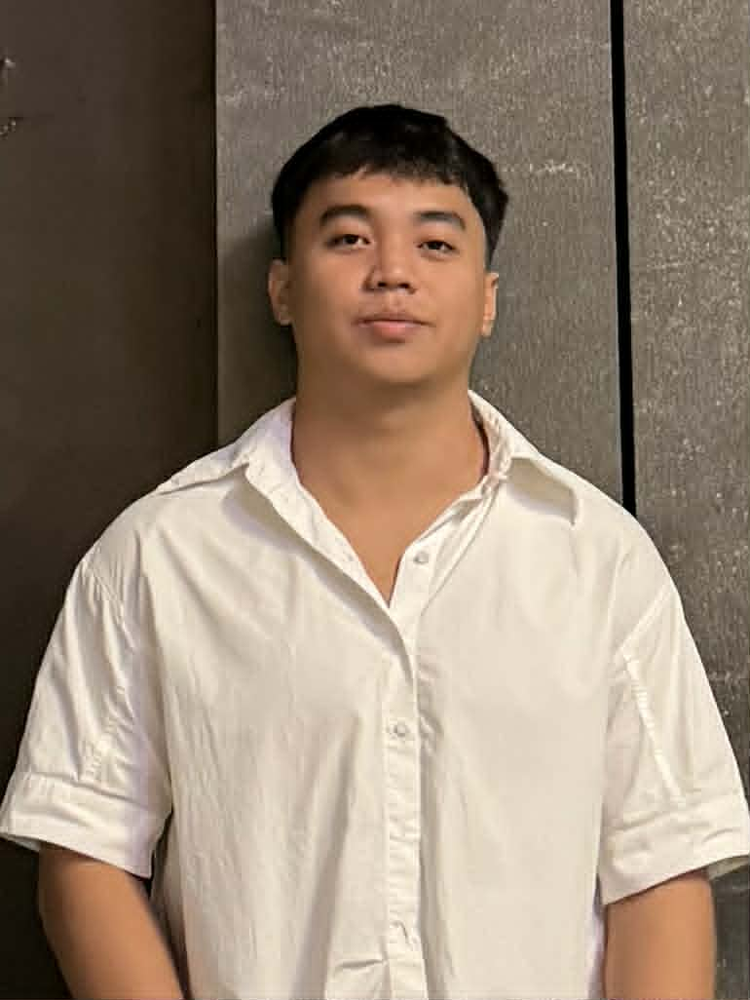

About Me
Brief Biography
I am Mark Ramirez, a student and aspiring designer based in the Philippines. I have a deep appreciation for PH streetwear culture—its raw energy, bold typography, and minimalist aesthetic. This passion heavily influences my approach to web design, where I aim to create layouts that are both functional and visually striking.
Educational Background
I am currently a student in the Web Design course, focusing on mastering the core technologies of the internet: HTML and CSS. My academic journey is centered on understanding layout design, responsiveness, and user experience (UX) principles to build professional-grade websites.
Career Goals & Interests
My goal is to become a full-stack developer who specializes in clean, high-performance websites for local lifestyle and fashion brands. I am particularly interested in how digital spaces can reflect the identity of a physical brand, making the user's online journey as seamless as unboxing a fresh drop.